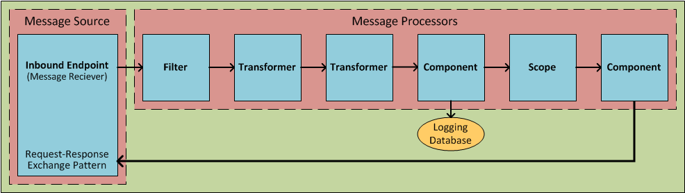
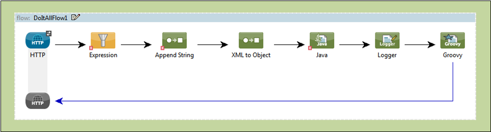
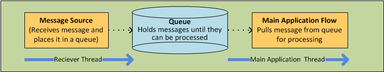
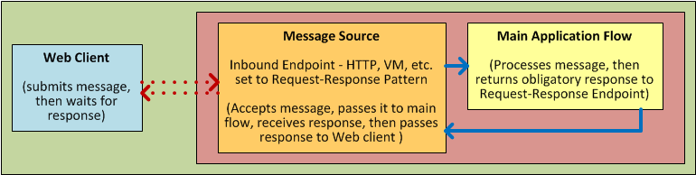
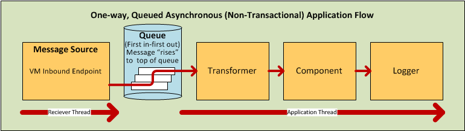
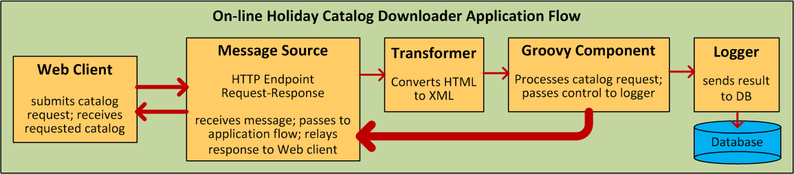
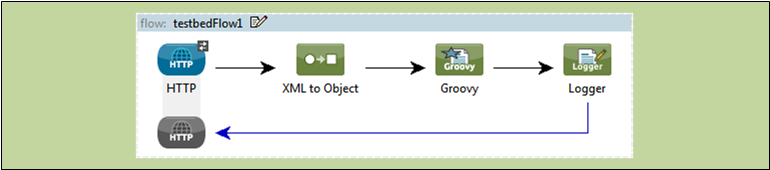
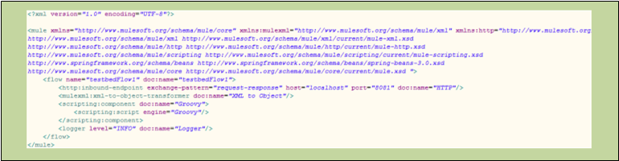

Mule Application Architecture
| This doc page is under construction. Please pardon the inconsistent appearance and gaps in information. |
Mule Application Architecture
At the simplest level, a Mule application accepts a succession of messages one at a time, then processes each message in the order it was received. Sometimes, the Mule application returns a different message to the source of the original message. In other cases, the application might send the message in its original or altered form to one or more third parties. Or it might do both.
In still other cases, Mule might decline to process (i.e., discard) a message that does not meet specific criteria.
Advanced Mule applications support much more than this sort of linear message processing. You can set up mechanisms to handle different messages in different ways. Furthermore, you can construct applications that utilize:
-
various queue-and-thread arrangements to maximize throughput
-
clusters or transactions to maximize reliability
-
object-stores to ensure data persistence
These represent only a fraction of the features you can implement through a Mule application.
About Mule Execution Units
Mule ESB supports several architectural approaches to building Mule applications. MuleSoft recommends Flows, the newest, most convenient, and most flexible architecture as the preferred execution unit for most Mule applications. However, Services and Patterns remain available, and may prove useful in certain specialized situations.
Flows
Flows qualify as the most powerful and flexible way to construct Mule applications, because you can arrange pre-packaged building blocks into a sequence of message-processing events that fit your application needs exactly.
Flows can be particularly effective for the following use cases:
-
Simple integration tasks
-
Scheduled data processing
-
Integration with either Cloud-based or on-premise applications
-
Event processing where multiple services need to be orchestrated
Mule provides a pair of interfaces for building flows. You can choose between:
-
typing lines of XML code into your application configuration file
-
using Studio, Mule’s drag-and-drop graphical interface, to arrange building block icons into visual sequences
Subsequently, you configure these sequenced building blocks using other Studio graphical tools, or by editing XML code in the configuration file.
Patterns
Mule ESB provides Configuration Patterns, which are optimized for several common message-processing cases. If your application falls outside the area covered by the group of Configuration Patterns bundled with Mule, you should use a flow instead.
The four pre-packaged Configuration Patterns are:
| Configuration Pattern | Brief Description |
|---|---|
Simple Service |
Exposes JAX-WS annotated components as SOAP web services. Exposes JAX-RS annotated beans as RESTful components. Can also handle JAXB, XML and raw content with simple POJO components. |
Web Service Proxy |
Proxies remote web services. Can perform transformations on the SOAP envelope. Can rewrite or redirect remote WSDLs to local WSDLs. |
Bridge |
Establishes a direct conduit between an inbound endpoint and an outbound endpoint. Supports request-response and one-way bridging. Can perform transformations. Supports transactional bridging of inbound to outbound. |
Validator |
Validates inbound messages against a defined acceptance filter. Returns an ACK or NACK response synchronously and dispatches valid messages asynchronously. |
Services
Prior to the release of Mule ESB 3, which introduced Mule Flows, Mule Services stood as the main architectural approach to Mule application building. Each Service provides a fixed framework for integrating functionality, so you must configure each one to receive input through an inbound router and an endpoint and to provide output through an outbound router and another endpoint. If you want to chain two or more services together, you typically link them through VM queues.
By contrast, one or more easily-linked building blocks can create a flow that achieves the same functionality, while requiring far less development effort.
MuleSoft recommends that all new applications be implemented around Flows, rather than Services.
About Flows
At the simplest level, Flows are sequences of message-processing events. As the following schematic illustrates, a message that enters a flow may be:
-
validated (filtered)
-
enriched (appended)
-
transformed into a new format, sometimes by first undergoing transformation into an intermediate format
-
processed by custom-coded business logic
-
logged to a database
-
evaluated to determine what sort of response gets returned to party that submitted the original message

The units from which Flows are constructed are known generically as Building Blocks. In general, these correspond to icons on the Studio graphical canvas or XML elements within the Mule application configuration file.
The following screenshot illustrates a flow laid out on the Studio graphical “canvas.”

The following code block represents the XML listing for that same flow:
1
<?xml version="1.0" encoding="UTF-8"?><mule xmlns="http://www.mulesoft.org/schema/mule/core" xmlns:mulexml="http://www.mulesoft.org/schema/mule/xml" xmlns:http="http://www.mulesoft.org/schema/mule/http" xmlns:scripting="http://www.mulesoft.org/schema/mule/scripting" xmlns:doc="http://www.mulesoft.org/schema/mule/documentation" xmlns:spring="http://www.springframework.org/schema/beans" xmlns:core="http://www.mulesoft.org/schema/mule/core" xmlns:wmq="http://www.mulesoft.org/schema/mule/ee/wmq" xmlns:xsi="http://www.w3.org/2001/XMLSchema-instance" version="EE-3.2.2" xsi:schemaLocation="http://www.mulesoft.org/schema/mule/xml http://www.mulesoft.org/schema/mule/xml/current/mule-xml.xsd http://www.mulesoft.org/schema/mule/http http://www.mulesoft.org/schema/mule/http/current/mule-http.xsd http://www.mulesoft.org/schema/mule/scripting http://www.mulesoft.org/schema/mule/scripting/current/mule-scripting.xsd http://www.springframework.org/schema/beans http://www.springframework.org/schema/beans/spring-beans-3.0.xsd http://www.mulesoft.org/schema/mule/core http://www.mulesoft.org/schema/mule/core/current/mule.xsd http://www.mulesoft.org/schema/mule/ee/wmq http://www.mulesoft.org/schema/mule/ee/wmq/current/mule-wmq-ee.xsd "> <flow name="DemoFlow1" doc:name="DemoFlow1"> <http:inbound-endpoint exchange-pattern="request-response" host="localhost" port="8081" doc:name="HTTP"/> <expression-transformer doc:name="Expression"/> <append-string-transformer message="" doc:name="Append String"/> <mulexml:xml-to-object-transformer doc:name="XML to Object"/> <component doc:name="Java"/> <logger level="INFO" doc:name="Logger"/> <scripting:component doc:name="Groovy"> <scripting:script engine="Groovy"/> </scripting:component> </flow></mule>
Flow Building Blocks
Studio building blocks fall into several functional categories, some of which are processing blocks that comprise several building blocks.
Not all building blocks can occupy all positions within a flow. Often, the position of a building block in relation to the rest of the flow (or in relation to the building blocks in its immediate vicinity) greatly influences the behavior of the building block and how it must be configured.
The following sub-sections detail the various types of building blocks (and processing blocks) that can populate a Mule flow.
Message Source (Optional)
The first building block in a typical flow is a Message Source, which receives messages from one or more external sources, thus triggering a flow instance. Each time it receives another message, the message source triggers another flow instance.
Sometimes the message source immediately places the incoming message into a queue. This allows the message source to close the receiver thread it used to accept the message, and immediately open another thread to accept another incoming message. The message just placed into the queue, whiere it waits until it reaches the top of the queue and can be processed through the rest of the flow. Since the message is processed sequentially by two distinct threads (with an intervening wait inside the queue), start-to-finish transaction processing is typically not possible. For an elegant work-around, see Advanced Use Case, below.

Sometimes, a message source can accept incoming messages from multiple transport channels. For instance, you can embed both an HTTP endpoint and a Servlet endpoint within a building block known as a Composite Scope. Whichever endpoint recieves a message effectively becomes the message source for that particular message flow instance. Alternatively, you can populate a composite scope to receive both IMAP and POP3 mail.
Under certain conditions, flows do not need to be triggered by message sources. For instance, a Flow Reference Component can trigger a private, child flow, which can execute synchronously or asnchronously, be resuable, or not, and inherit the exception strategy used by the parent flow, or not. For details, see Child Flows, below. Similarly, the Async Scope can trigger a child flow that executes asynchronously, (i.e., in parallel with the parent flow).
Message Processors
Typically, these are pre-packaged execution units that process messages in various ways. Except for message sources, all the building blocks in a flow qualify as Message Processors. In contrast to the Mule Services they have largely supplanted, message processors offer the following advantages:
-
generally, they don’t have to be custom-coded
-
they don’t have to be connected to each other with routers, endpoints, and VM queues in the rigid fashion required for services
-
multiple message processors can be combined into various structures that provide the exact functionality you need for your application
You can assemble message processors into application (i.e., main flow) sequences in two distinct ways:
-
by arranging icons on the Studio canvas
-
by inserting XML code into the application configuration file
Message processors fall into a number of convenient categories, as the following table indicates:
| Category | Brief Description |
|---|---|
|
Endpoints |
They fall into two sub-categories (Inbound and Outbound), and provide a means for Mule applications to communicate with the outside world. |
|
Scopes |
They enhance, in a wide variety of ways, the functionality of other message processors or functional groups of message processors known as Processing Blocks. |
|
Components |
They allow you to enhance a flow by attaching functionality such as logging, display output, and even child flows. Alternatively, they facilitate Software as a Service (SaaS) integration by providing language-specific "shells" that make custom-coded business logic available to a Mule application. |
|
Transformers |
They prepare a message to be processed through a Mule flow by enhancing or altering the message header or message payload. |
|
Filters |
Singly and in combination, they determine whether a message can proceed through an application flow. |
|
Flow Controls |
They specify how messages get routed among the various message processors within a flow. They can also process messages (i.e., aggregate, split, or resequence) before routing them to other message processors. |
|
Cloud Connectors |
They facilitate integration of Mule applications with Web-based, 3rd-party APIs, such as Salesforce and Mongo DB. |
After you have arranged the various Message Processors in your flow into proper sequence, you may need to configure these Message Processors using one or both of the available options:
-
selecting from drop-down lists of available options or completing text fields in the Studio graphical interface
-
entering attribute values within the XML configuration code. (A nifty, predictive “auto-complete” feature eases this task greatly)
Message Processing Blocks
Mule provides several ways to combine multiple Message Processors into functional Processing Blocks.
For instance, the Composite Source Scope allows you to embed into a single Message Source two or more inbound endpoints, each one listening to a different transport channel. Whenever one of these listeners receives an incoming message, it triggers a flow instance and starts the message through the message processing sequence.
Other building blocks known as Scopes provide multiple ways to combine Message Processors into convenient functional groupings that make your XML code much easier to read, implement parallel processing, or create reusable sequences of building blocks.
Endpoints
As previously mentioned, Endpoints implement transport channels that facilitate the insertion or extraction of data from Flows. Endpoints serve a diverse variety of roles, depending on how they are configured. For example, they can, as previously mentioned, serve as Inbound or Outbound conduits. They can implement one-way or request-response exchange patterns. And, in certain situations, you can embed other types of Message Processors, such as Transformers, into Endpoints.
Inbound Endpoints
When placed at the start of a flow, either by itself, or when embedded along with other endpoints in a Composite Source Component, an Endpoint is always referred to as an Inbound Endpoint, because it accepts messages from external sources and passes them to the rest of the flow, thereby triggering a new flow instance.
Not all Flows require an Inbound Endpoint. For instance, a child flow can be triggered by a Flow Reference which does not import any data into the child flow.
Not all Endpoints can serve as Inbound endpoints. For instance, the SMTP Endpoint can only serve as an Outbound Endpoint.
Outbound Endpoints
At the most basic level, Outbound Endpoints pass data out of a flow. Often they occupy the final Message Processor position in a flow, so when they pass data out of the flow, the flow instance is considered complete.
However, an Outbound Endpoint can also appear in the middle of a flow, passing data to a database as the rest of the flow continues, for instance.
Not all Endpoints can serve as Outbound endpoints. For instance the POP3 and IMAP can only serve as Inbound Endpoints.
Outbound endpoints can also be configured for a request-response exchange pattern, as detailed in the following section.
Request-Response Endpoints
When Inbound Endpoints such as HTTP or VM are configured for a request-response pattern, they effectively become hybrid Inbound-Outbound endpoints. Even if other Outbound endpoints, exist to conduct data out of the flow, the Inbound Endpoint configured for a request-response exchange pattern also conducts data out of the flow by returning a response to the original sender of the message.
When Outbound Endpoints are configured for request-response exchange patterns, they can exchange data with resources outside the flow or with a string of message processors entirely within the same Mule application, as depicted by the following schematic:

Not all Endpoints can be configured for the request-response exchange pattern, and of those that can, request-response is the default exchange pattern for only some of them. To complicate matters further, certain cases exist (such as the JDBC Endpoint) where request-response is sometimes available, but only when the Endpoint is configured as an Outbound Endpoint.
When none of the endpoints in a main flow is configured to the request-response exchange pattern, the flow follows a One-Way exchange pattern in which it receives incoming messages, but is not expected to provide any response to the original sender. However, the flow may send data to other parties such as a log file, a database, an email server, or a Web-based API.
Processing Strategies
A processing strategy determines how Mule executes the sequence of Message Processors in your Mule application. For example, when the message source is configured for the request-response exchange pattern, Mule sets the processing strategy to synchronous, thus ensuring that the entire sequence of message processors executes, and the client that sent the message receives a response. To accomplish this synchronous processing, the entire flow is executed on a single processing thread.
By contrast, when the flow is configured for a one-way, non-transactional exchange pattern (i.e., no response to the original message sender is required, and it isn’t necessary to verify that all steps in the flow have been completed), Mule sets the processing strategy to Queued Asynchronous, which has the potential to raise flow throughput. Under this processing strategy, the Inbound Endpoint places the incoming message into the queue as soon as it is received, then closes the receiver thread. When the message reaches the top of the queue, it resumes processing, but this time on a different thread. By implication, this sort of processing does not qualify as transactional end-to-end, because the transfer from one thread to the next means that the processing can not be rolled back if an exception is thrown.

Default Processing Strategies
All flow-based Mule applications are built around a single main flow. If the main flow employs a request-response exchange pattern, Mule sets the default processing strategy to synchronous. If the main flow implements transactionality, Mule also sets the default processing strategy to synchronous. For all other cases, Mule sets the default to queued asynchronous.
If Mule has set the processing strategy to synchronous, you cannot change it. On the other hand you, whenever Mule sets the default processing strategy for a main flow to queued asynchronous, you can explicitly force the main flow to run synchronously.
Additionally, you can configure child flows to do the following:
-
Run synchronously or asynchronously
-
Inherit the exception strategy of the parent flow, or implement one of its own
-
To be reusable, or not
For further details, see Flow Processing Strategies
Exception Strategies
An exception strategy determines how Mule responds if and when an error occurs during the course of message processing. In the simplest case, the error is simply logged to a file.
You can configure an exception strategy to respond in a variety of ways to a variety of conditions. For example, if an exception is thrown after a message has been transformed, you can set Mule to commit the message as it existed after being transformed, but immediately before the error occurred, so that the message can not inadvertently be processed twice.
For details, see: Error Handling
Flow Architecture
Mule Flows are extremely flexible, so you can combine building blocks in many ways, often to achieve the same result. For many use cases, however, certain message processors tend to fall into certain loosely ordered patterns. For example, suppose you wanted to create an application that receives product catalog requests from a Web page then sends a PDF of the catalog back to the client who submitted the request. In addition, you want this flow to record the client’s customer information to a database and log the transaction so that you can keep track of how many of each kind of catalog have been sent. Your flow might look something like this:

1
[MULE3USER:Describe the flow here]
Note that you could embed the filter and the transformers inside the Inbound Endpoint, but placing them in the main flow sequence makes the sequence of events easier to “read” on both the Studio Message Flow canvas and the the XML-based application configuration file.


Child Flows
Every Fiow-based Mule application is based on a main application flow, which, at the simplest level, is a series of message processors sequenced to perform a chain of message processing events. Advanced Mule applications can augment the main application flow with numerous child flows that perform in a variety of ways. These child flows fall into two main categories: Synchronous and Asynchronous.
Synchronous
When a main flow triggers a synchronous child flow, it passes programmatic control to that child flow and suspends its own message processing activity until the child flow completes its own sequence of message processing events and has passed programmatic control back to the main flow.
Since the main flow and the child flow hand off programmatic control to each other, and by implication, all processing occurs on the same thread, each event in the message processing sequence can be tracked, and transactionality can be ensured.
Subflows
Subflows inherit both the processing strategy and exception strategy of the parent flow.
Subflows provide a number of potential advantages. First, they can isolate logical processessing blocks, making the underlying XML code much easier to read. Next, they can be reused, so a developer can write a particular block of code just once, then reference the same subflow repeatedly from within the same application.
Although a subflow operates synchronously, it can spawn an asynchronous child flow of its own, which runs in parallel with the main flow (or the parent subflow itself), until the parent subflow and then the main flow complete.
Synchronous Child Flows that are not Subflows
A special type of child flow operates synchronously, as a Subflow does, but unlike a Subflow, this type of synchronous child flow uses its own, rather than the parent flow’s, exception strategy. This can be useful when the message processing events inside the child flow are either much more or much less crucial than the rest of the events in the main flow. In either case, you can set the exception strategy used by the synchronous child flow to perform very differently from the exception strategy you configured for the main flow.
Asynchronous
Asynchronous Flows begin processing when triggered by the main flow. Since this type of child flow does not need to return data to the main flow, it can execute simultaneously with the main flow. In other words, when the main flow triggers the asynchronous flow, it neither passes programmatic control to the asynchronous flow, nor does it pause its own message processing until the asynchronous flow completes execution. In other words, the parent flow retains programmatic control throughput, without regard to the state of the asynchronous thread.
Calling Child Flows
The Flow Reference Component can call three distinct types of child flows.
The first type, known as a Subflow, is synchronous and always inherits both the processing strategy and exception strategy employed by the parent flow. While a Subflow is running, processing on the parent flow pauses, and it resumes only after the Subflow completes and hands control back to the parent flow. Also, because a subflow must be named, it can be referenced multiple times by Flow Reference Components scattered about the main flow.
The second type of child flow, known as a Synchronous Child Flow, is named, and therefore can be resused just like a Subflow. Also just like a subflow, a synchronous child flow causes the parent flow to pause until it completes execution. However, unlike a subflow, a synchronous child flow does not inherit the exception strategy used by the parent flow. This allows special error handling measures to be applied exclusively to the message processing events within the synchronous child flow.
The third type of child flow you can call through the Flow Reference Component is called an Asynchronus Child Flow. Note that an asynchronous flow called in this manner must be named, and because it exists outside the parent flow, it can be called multiple times.
An Asynchronus Child Flow called by the Async Component, rather than the Flow Reference Component, exists in-line (i.e., within the parent flow), and runs asynchronously on a spearate thread, while the main thread continues to run without pause.
The following table details the component to use for calling the various types of child flows:
| Type of Child FLow | Calling Component | In-line ? (i.e. not named and non-reusable) | Execution | Exception Strategy |
|---|---|---|---|---|
Subflow |
Flow Reference |
No |
Synchronous |
Inherited |
Synchronous Child Flow |
Flow Reference |
No |
Synchronous |
Not Inherited |
Asynchronous Child Flow |
Flow Reference |
No |
Asynchronous |
Not Inherited |
Asynchronous Child Flow |
Async |
Yes |
Asynchronous |
Inherited |
Flow Configuration
Although flows consist of sequences of Studio building blocks, you cannot place any building block in any position within a flow. Additionally, the proximity or absence of certain building blocks within a sequence can determine whether a given building block can be placed at a certain point within a flow. Finally, depending where it resides in a flow, a given building block, especially an endpoint, can expose an significantly different set of attributes for configuration.
Fortunately, the graphical canvas in Mule Studio keeps track of all these contingencies, and it will not let you place a building block icon where it is not allowed.
Although it is impossible to cover all the possible sequences of building blocks that can produce workable flows, a typical flow might utilize the following sequence:
-
A Message Source consisting of one or more inbound endpoints triggers the flow each time it receives a message.
-
A Filter, which may be embedded in the message source or follow it in the main flow, may identify invalid messages and decline to pass them to the rest of the flow for processing.
-
A Transformer can convert the incoming message into a data format consumable by the other message processors in the flow. Like a filter, a transformer can be embedded within the message source or reside within the main flow.
-
A Message Enricher can append certain vital information to a message. For instance, if a message arrives with an address attached, the message enricher might use the postal code to look up the associated telephone area code, then append this information to the message ehader for marketing purposes.
-
After the message has been “prepared” for processing, it is generally sent to some pre-packed or custom business logic (usually called a Component) so that it can be processed in a manner appropriate for its particular content. Sometimes, external databases or APIs such as Saleforce are leveraged through building blocks known as Cloud Connectors.
-
The final stages of a flow can vary considerably; some or all of the following can occur:
-
a response is returned to the original sender of the message
-
the results of the business processing are logged to a database or sent to some other third party
-
Throughout the flow, you can do the following:
-
configure queues (even more than one type on the same flow)
-
specify threading models
-
create child flows of various types
-
set exception strategies that apply to different parts of the application